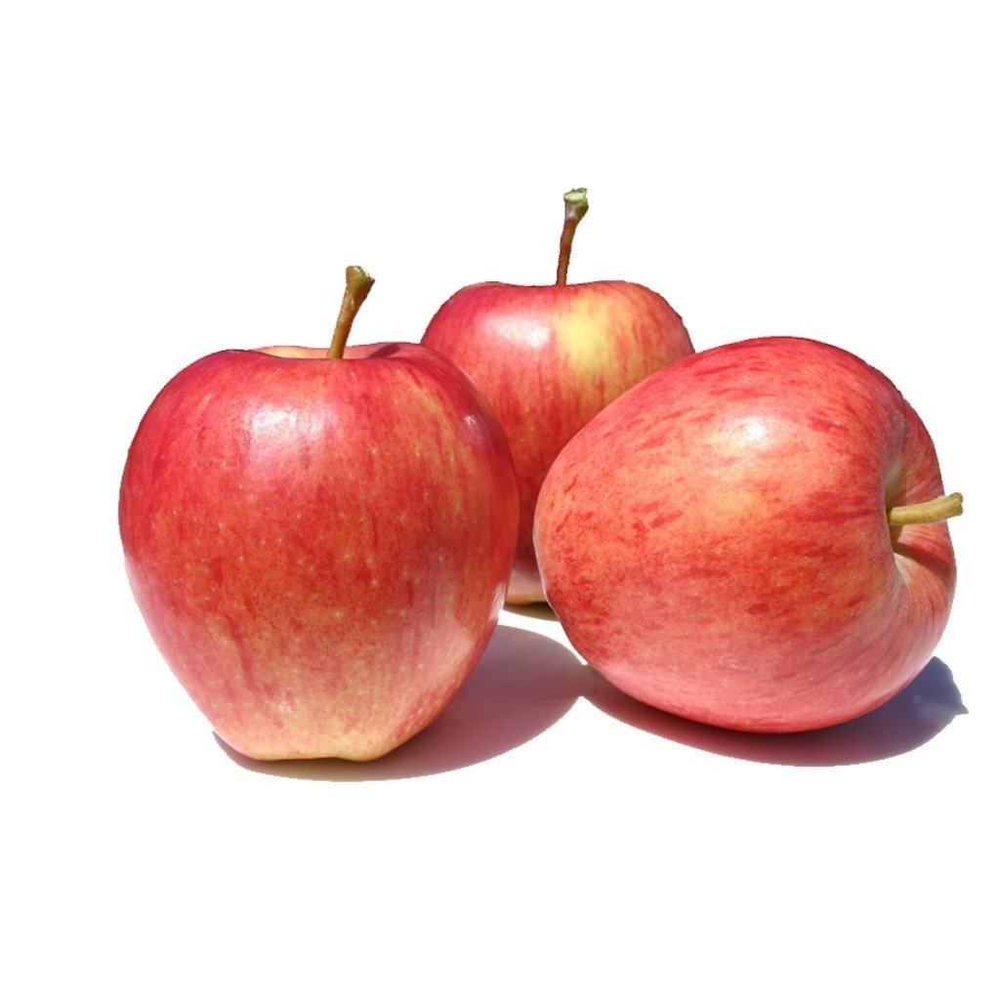
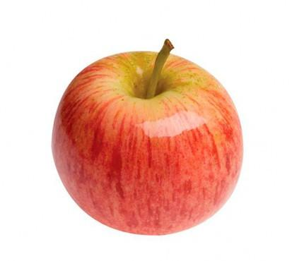

Já provou essa delícia?
Bastante comuns na mesa de todos os brasileiros e responsáveis por 95% de toda a produção nacional, as maçãs Gala e Fuji são opções ideais para o dia a dia, seja para um lanche da tarde, sobremesa ou como ingrediente em uma receita especial. Mas você conhece as características que diferenciam uma da outra? Veja abaixo! Gala: doce, crocante e com leve toque de acidez
A maçã Gala, a mais consumida no Brasil, é reconhecida no mercado interno e em vários outros países pelo sabor doce, crocância e leve toque de acidez. Sua forma redonda com base cônica e cor vermelha rajada com o fundo amarelo facilitam a sua identificação. Com um aroma totalmente agradável, ela é ideal para o consumo in natura e também para receitas assadas ou cozidas, bem como para o preparo de saladas e molhos. Fuji: firme, crocante e doce na medida certa
Mais arredondada e com rajadas de cores em vermelho e verde amarelado, a maçã Fuji é outra queridinha do paladar dos brasileiros. Normalmente um pouco maior que a Gala, a Fuji caracteriza-se pela casca firme e polpa clara, além de ser doce e crocante na medida certa. Na cozinha, ela é propícia para ir ao fogo porque cria a suculência ideal para sobremesas, geleias e outros pratos cozidos. Agora você já sabe diferenciar as variedades Gala e Fuji nos supermercados sem dificuldades! Apesar das características que as diferenciam, ambas são fortes aliadas de uma alimentação saudável – reservam diversos efeitos benéficos ao organismo. São cerca de 50 à 80 calorias por unidade, e uma grande riqueza em vitaminas A, B6, B12 e C. O consumo regular de maçãs auxilia no controle da glicemia, na redução das taxas de colesterol e ajuda na prevenção de doenças cardiovasculares. E vale lembrar: os dois tipos podem ser encontrados o ano todo nos supermercados, e contam com o alto rigor de qualidade e segurança na produção que só as maçãs brasileiras podem proporcionar.